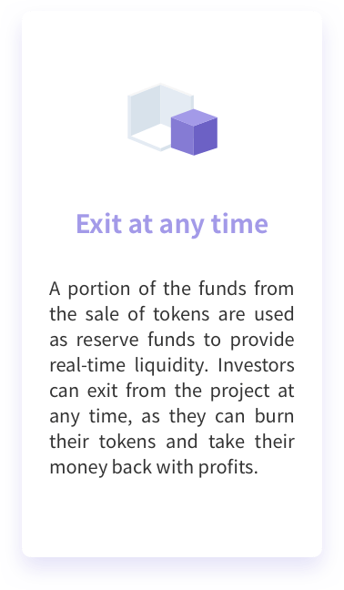
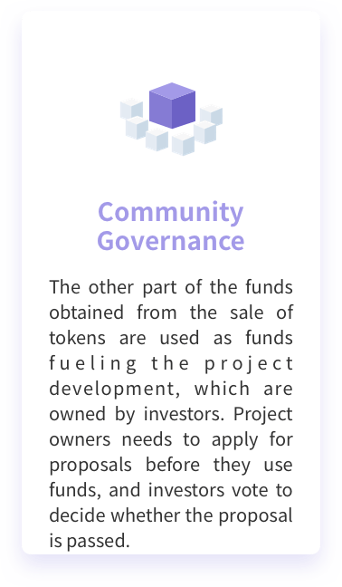
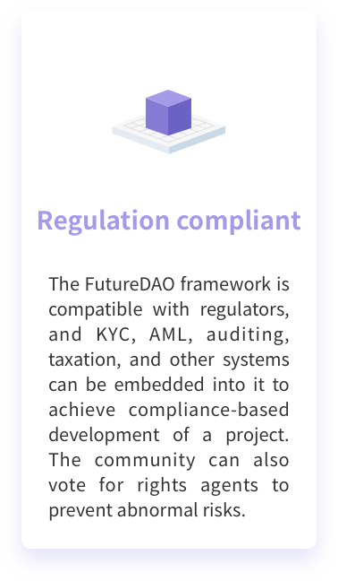
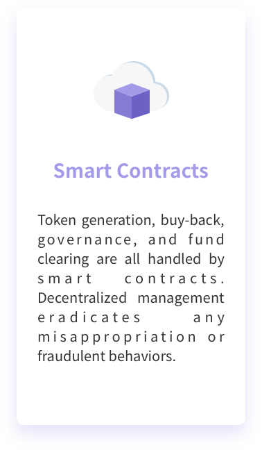
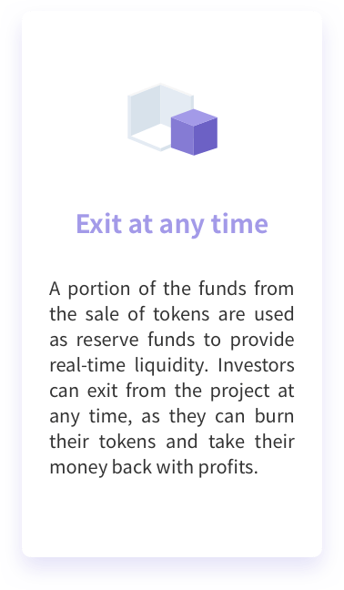
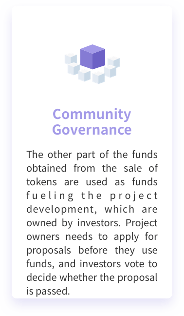
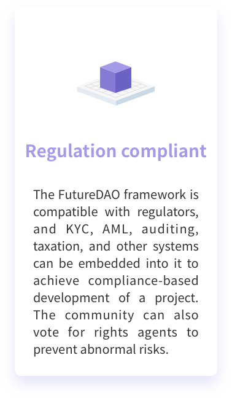
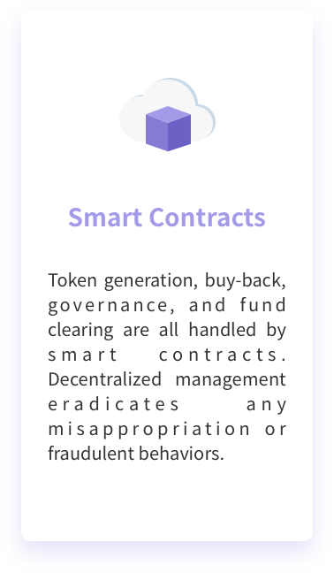

FutureDAO
A DAICO platform for creative projects’ financing and governance
Crowdfunding is the only channel to generate tokens. Tokens are generated when investors buy and are burned when investors exit. The total value of tokens is the true valuation of the project.
The more tokens are generated, the higher the issuance and buy-back prices will be. Real-time prices are achieved in the primary market through the bonding curve.
A portion of the funds from the sale of tokens are used as reserve funds to provide real-time liquidity. Investors can exit from the project at any time, as they can burn their tokens and take their money back with profits.
The other part of the funds obtained from the sale of tokens are used as funds fueling the project development, which are owned by investors. Project owners needs to apply for proposals before they use funds, and investors vote to decide whether the proposal is passed.
The FutureDAO framework is compatible with regulators, and KYC, AML, auditing, taxation, and other systems can be embedded into it to achieve compliance-based development of a project. The community can also vote for rights agents to prevent abnormal risks.
Token generation, buy-back, governance, and fund clearing are all handled by smart contracts. Decentralized management eradicates any misappropriation or fraudulent behaviors.
 






